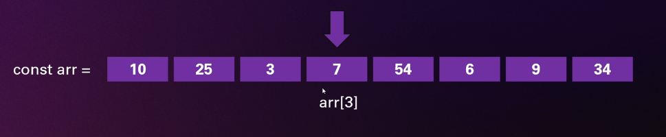

Estrutura sequencial que permite acessar seus elementos facilmente com a sintaxe dos []

Vantagens: acesso rápido à um elemento.
Desvantagens: o tamanho é fixo na maioria das linguagens.
Adicionar ou remover elementos é bastante custoso em termos de processamento.
É necessário criar espaço na memória suficiente para guardar o número de elementos do tipo
especificado. Pode ser que haja espaço ocupado desnecessariamente.
Listas ligadas, também conhecidas como 'Listas Encadeadas' (Linked Lists) são listas que armazenam
elementos de forma sequencial mas de forma que cada elemento armazene também uma referência ao seu
próximo elemento (chamamos isso de ponteiro).
Vantagens: facilidade em adicionar ou remover elementos. Não há necessidade de determinar
um elemento fixo (o limite nesse caso é o espaço na memória disponível).
Desvantagens: acessar um elemento pode ser bastante custoso em termos de processamento,
pois precisamos iterar pela lista completa até encontrar o elemento desejado.
Estrutura sequencial onde cada nó guarda um elemento e o endereço para o próximo
elemento da sequência.